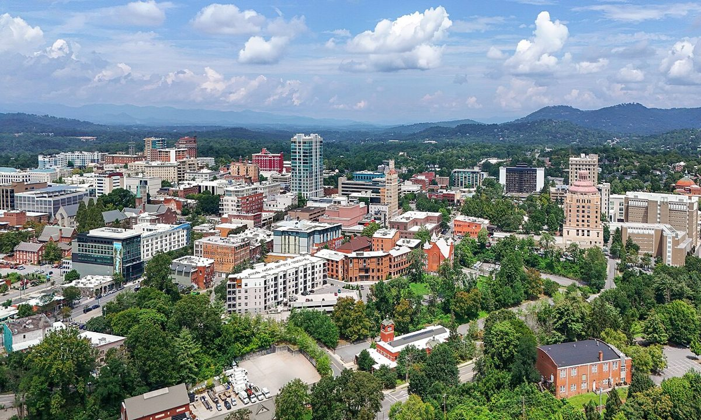

NORTH CAROLINA · NIGHT TWO
Asheville
Monday night → Tuesday morning
Make Asheville the comfortable middle of the trip: a meal, a room, and a little city time after the waterfall. Resist adding every mountain stop to Monday.
THE FEEL OF THE PLACE
Atmosphere.
Asheville supplies the trip’s livelier evening: independent food, music venues and enough different neighborhoods to reward choosing one rather than chasing everything. Downtown is convenient for a short wander; West Asheville is more useful for a relaxed neighborhood meal. Treat the city as a cultural stop between outdoor days, and verify individual riverfront businesses rather than assuming every pre-storm favorite has reopened.

Resized and JPEG-compressed for this guide; no scene alterations.
Representative photograph from the linked archive; seasons and current conditions will differ.
A SUGGESTED RHYTHM
Make the stop your own.
Indoor alternative · Folk Art Center
The Southern Highland Craft Guild lists daily hours of 10am–5pm. Appalachian craft galleries make this a useful weather alternative, accessed from east Asheville. Admission is free; plan the visit within opening hours.
Tuesday · Toward Linville
Use I-40 east and US 221 north as the practical backbone. The Parkway closure at mileposts 344.2–355.3 prevents a continuous Parkway drive between Asheville and Linville. Allow roughly 2½–3½ hours total driving for Tuesday’s route through Linville and Beacon Heights to Blowing Rock, plus visits.
Extra time · Craggy Pinnacle
For the two-night Asheville alternative, this is a clear-weather mountain outing. Allow 60–90 minutes walking plus the drive; skip it if Monday already includes Brevard. Check road and trail conditions first. Official trail information ↗
EAT WELL, KEEP IT SIMPLE
A couple of good places to eat.
Casual choices for this stop, with restaurant information and independent reviews or local guides to help you choose. Published prices exclude extras unless noted; recheck hours before setting off.
White Duck Taco Shop · Downtown
Creative, internationally inspired tacos at 12 Biltmore Avenue, near Pack Square. Order a few tacos rather than a full formal meal; convenient before a downtown wander or show. This recommendation is the downtown branch, not the closed River Arts District location.
Budget: Budget-flexible à-la-carte tacos; current menu total not verified.
When to go: Official page: daily 11:30am–9pm. Review directory shows shorter noon–8pm hours, so confirm Monday evening service.
Universal Joint · Asheville
Burgers and pub food in a converted garage at 784 Haywood Road. A comfortable West Asheville option when you want dinner without the fuss of a destination tasting menu.
Budget: Casual, moderate-price pub option; no current branch-specific menu total verified.
When to go: Official Sunday–Thursday opening hours 11:30am–11pm; kitchen cutoff not separately stated.
CHECK BEFORE YOU GO
Useful sources.
Road and trail conditions can change with weather and repairs. Driving and visit durations are planning allowances, not live navigation. Recheck opening hours and dated events shortly before travel.